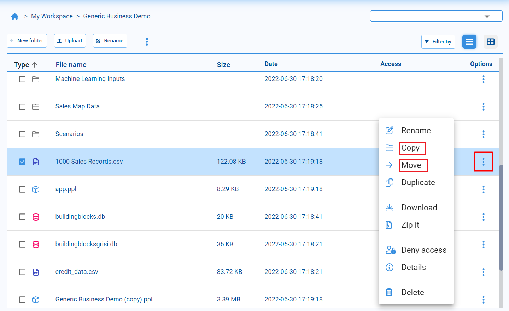

Administrador de archivos
Contents
Administrador de archivos#
El administrador de archivos de Pyplan esta diseñado para gestionar de manera fácil y transparente los archivos, carpetas y aplicaciones, que pueden visualizarse en un árbol jerárquico basado en su estructura de directorios. Nos permite ordenar en carpetas y subcarpetas, cambiar nombres, copiar, mover, eliminar y buscar archivos.

My Workspace: Carpeta personal donde se pueden guardar todas las aplicaciones del usuario.
Carpeta seleccionada: Carpeta seleccionada que podremos examinar en la parte derecha del administrador de archivos.
Carpeta pública de la empresa: Carpeta que contiene las aplicaciones disponibles a todos los usuarios de la empresa.
Vistas#
La vista por defecto del explorador nos muestra los archivos en formato lista, con distintos datos de cada archivo o carpeta. Más específicamente, el tipo de archivo, el nombre, el tamaño y la fecha de la última modificación.

Además de la vista del explorador como lista de archivos, por defecto, tenemos disponible la vista mosaico. En esta podremos ver en primera instancia las las carpetas y luego los mosaicos que representan los archivos con el correspondiente icono de cada tipo de archivo.
Abrir aplicaciones#
Desde el administrador de archivo, podemos identificar las aplicaciones por el ícono que aparece a la derecha del nombre. Al seleccionar una carpeta que corresponda a una aplicación nos aparecerá en el menú superior un botón con la opción Open app, alternativamente también estará disponible en el menú contextual.

Filtrar y buscar#
Para facilitar la navegación entre los archivos, tenemos la opción de filtrar por tipo de datos. Esto nos permitirá ver solamente los archivos con los tipos de datos especificados

También es posible utilizar el buscador para encontrar archivos o carpetas. Ingresando un texto parcial obtendremos todos los archivos que contengan el texto correspondiente en su nombre.

Crear carpetas y renombrar archivos#
Para organizar nuestros archivos tenemos la opción de crear nuevas carpetas. Para esto debemos ubicarnos en el directorio donde deseamos crear la carpeta y debemos seleccionar la opción New folder, se nos abrirá una ventana donde podremos elegir el nombre de la nueva carpeta. Al confirmar el nombre, la carpeta aparecerá en el directorio.
También tenemos la posibilidad de renombrar carpetas y archivos. Debemos seleccionar el archivo/carpeta que deseamos renombrar y hacer click en la opción Rename. Una vez hecho esto, se habilitará una ventana de edición, una vez que cambiemos el nombre, confirmamos los cambios marcando la opción de confirmación.

Copiar y mover#
Al igual que en cualquier administrador de archivos, podremos copiar y mover archivos entre las distintas carpetas. Para ello disponemos de las opciones copy y move en el menú contextual al seleccionar un archivo o carpeta en el directorio.
Para copiar o mover varios archivos se pueden seleccionar y luego desde el menú en la parte superior buscar las opciones copy o move según se necesite.
Una vez que hayamos seleccionado la opción copiar o mover, podemos usar el navegador para ir hasta la ubicación donde deseamos pegar el archivo. Luego debemos hacer click en la opción paste here para pegar el archivo o carpeta en la ubicación actual.

Truco
Otra forma de manipular archivos es utilizar los comandos Ctrl + C (copiar), Ctrl + X (mover) y Ctrl + V (pegar).
Duplicar y eliminar#
La opción Duplicate nos permite crear una copia del archivo o carpeta dentro del mismo directorio.

Una vez seleccionada esta opción aparecera en el directorio una copia del archivo o carpeta que hayamos seleccionado, y tendrá como nombre el prefijo Copy of … seguido del nombre del archivo original.

Cuando necesitemos eliminar algún elemento del directorio, podremos hacerlo desde la opción Delete del menú contextual.

Subir y descargar#
Para subir archivos desde la computadora, debemos acceder a la opción Upload, donde se nos abrirá una ventana donde podremos arrastrar o seleccionar desde nuestra computadora los archivos que vamos a subir.
Para descargar archivos y/o carpetas desde Pyplan tenemos que seleccionarlos, en el menú contextual seleccionar Download y automáticamente comenzará la descarga de los ítems seleccionados en un archivo en formato zip.

Comprimir y descomprimir#
En caso de necesitarlo tenemos la posibilidad de comprimir archivos dentro del directorio de Pyplan. Para ello seleccionamos los archivos que deseamos comprimir y hacemos click en Zip it, a continuación se creará el archivo comprimido dentro del directorio.

En caso de querer descomprimir un archivo zip, debemos seleccionar el archivo con formato zip y en la parte superior del directorio nos aparecerá el botón Unzip para descomprimirlo.